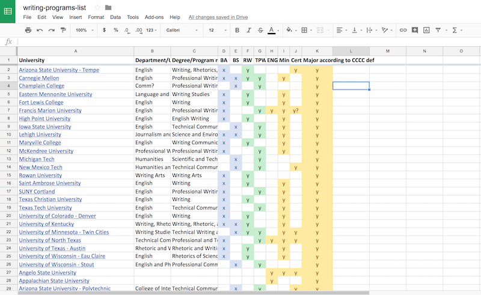
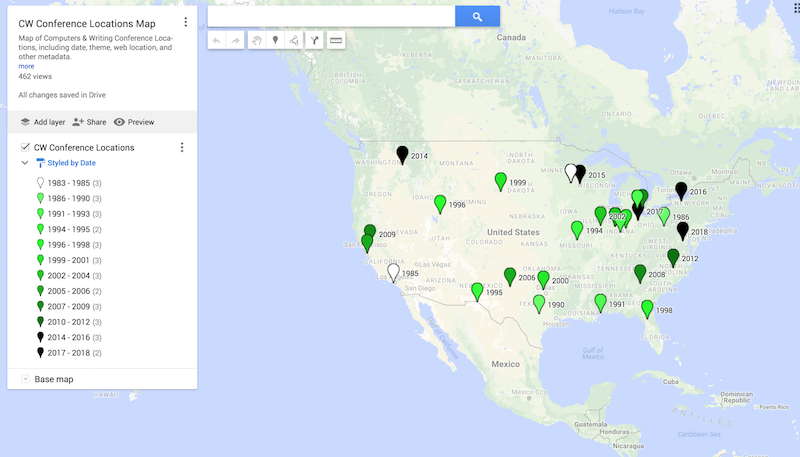

As a technorhetorician, I teach young professionals how to write, engage, advocate, and continually professionalize by using rhetoric in a writing-rich and media-slick world. I research and write about how technical and professional communicators use digital and social writing to learn, connect, create, and share. I serve the discipline and other institutions with writing and multimodal editing expertise in HTML and other technologies. I advocate for institutions, groups, and individuals to critically engage with and through technology, trying to live out Andrew Feenberg's call to question technology by focusing on human ends rather than technical ease.
Check out my vitae and teaching portfolio.
Ongoing projects
List of Writing Studies Programs
Complied as part of a larger rhetorical analysis project, this list includes undergraduate rhetoric, writing, and professional and technical writing programs in the United States. Includes BA/BS degree-granting programs as well as emphases, concentrations, minors, and certificates. Don't see your program listed here? Email me.
Computers & Writing Conference Map
A simple database of Computers & Writing conference locations. I'm currently expanding on this database, including websites, conference themes, and other information. See an error, or want to collaborate? Email me.